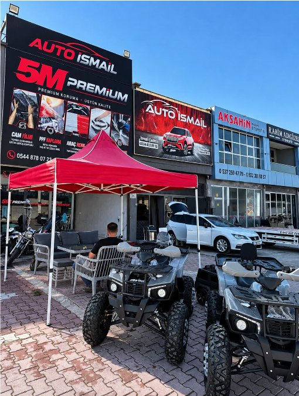

Konya · Karatay araç kaplama merkezi
PPF kaplama, cam filmi, seramik kaplama ve renk değişimi; Auto İsmail'in 10 yıllık tecrübesiyle, 5M Premium stüdyosunda.
Kaplamadan temizliğe, aracınızın görünüşü ve değeri için ihtiyaç duyduğu her şey tek adreste. Detayını görmek istediğiniz hizmete tıklayın.
Uygulamaların her aşaması ışıklı alanımızda, kontrollü şekilde yapılıyor.
Stüdyomuzdan çıkan araçlardan bazıları. Fotoğrafa tıklayarak yakından inceleyebilirsiniz.
Her uygulamada aynı düzenle çalışıyoruz; ne yapılacağını, ne kadar süreceğini baştan bilirsiniz.

Auto İsmail Galeri ile başladığımız yolculukta yıllarca araçlarla iç içe çalıştık; inceledik, alıp sattık, bakımını yaptık. Bir aracın değerini neyin koruduğunu bu süreçte öğrendik: temiz bir boya, çiziksiz bir yüzey, özenli bir iç mekân.
Bugün bu tecrübeyle 5M Premium markası altında araç kaplama merkezi olarak hizmet veriyoruz. Aracınızı ışıklı uygulama alanımızda tek tek kontrol ediyor, uygun malzemeyi seçiyor ve teslimden önce her detayı birlikte gözden geçiriyoruz.
Aklınıza takılan başka bir şey olursa WhatsApp'tan yazmanız yeterli.
Fiyat; aracın modeline, kaplanacak alana ve kullanılacak film ya da ürüne göre değişir. WhatsApp'tan aracınızın marka ve modelini, istediğiniz uygulamayı yazarsanız size net fiyat veririz.
Süre, hizmete ve aracın durumuna göre değişir. Randevu alırken teslim gününü size net olarak söylüyoruz.
PPF, boyanın üzerine yapıştırılan şeffaf bir filmdir; taş sıçraması ve çiziklere karşı fiziksel koruma sağlar. Seramik kaplama ise yüzeyde ince ve sert bir tabaka oluşturur; parlaklık verir, kir ve suyun tutunmasını azaltır. İkisi birlikte de uygulanabilir.
Ön cam ve ön yan camlar için yönetmelikte sınırlar var. Uygulamadan önce hangi cama hangi oranın uygulanabileceğini size anlatıyoruz.
Teslimde size uygulamaya özel bakım bilgisini veriyoruz. Genel olarak ilk günlerde yıkamayı ertelemenizi ve fırçalı otomatik yıkamadan uzak durmanızı öneririz.
WhatsApp'tan ya da telefonla bize ulaşmanız yeterli. Aracınızı ve istediğiniz hizmeti yazın, size uygun günü birlikte belirleyelim.
Aracınızın marka ve modelini yazın, uygun hizmeti ve fiyatı birlikte belirleyelim.